Write code and run servers from your phone.
CodeShift is a pair of Android apps for people who code and manage servers from their phones. CodeShift Keyboard switches between everyday typing and a full coding layout. CodeShift Terminal combines SSH, SFTP and a code editor in one app. No ads. No tracking. No account required.
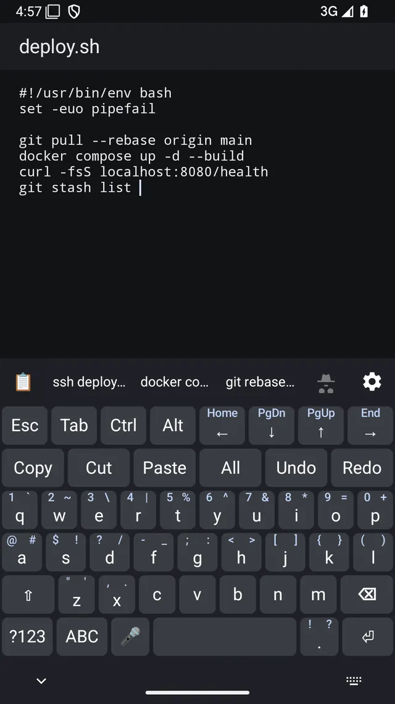
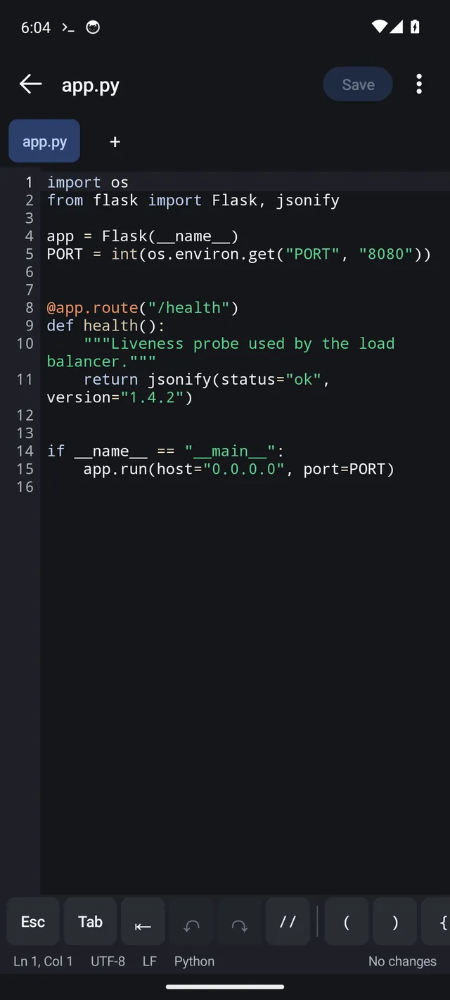
One keyboard. Two modes.
If you type code on Android, you usually end up choosing between a good everyday keyboard and one built for terminals. CodeShift Keyboard does both. Tap one key to switch modes, and it remembers which mode you use in each app.
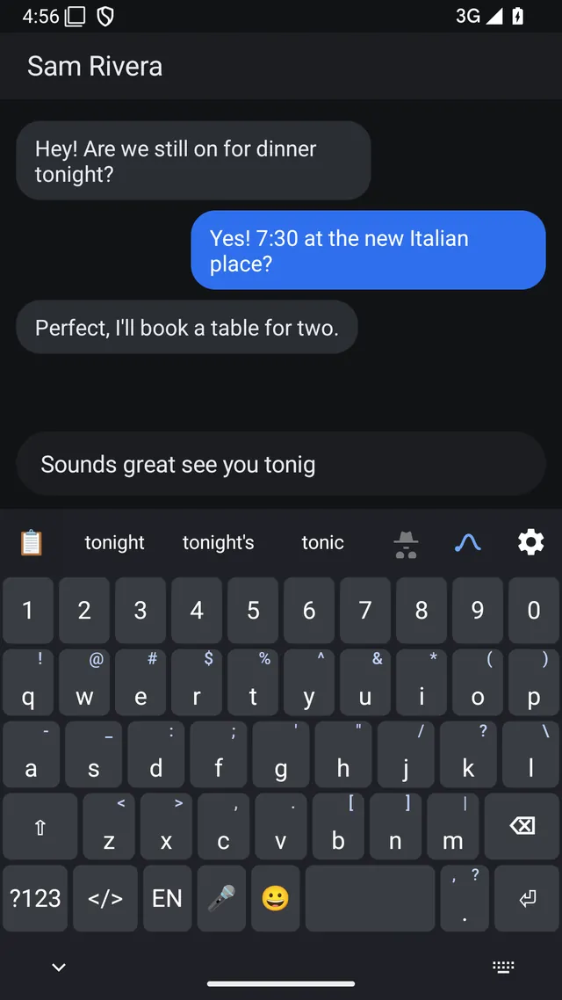
Everyday mode: a normal keyboard when you're not coding.
Everyday mode gives you a familiar QWERTY keyboard with word suggestions, autocorrect, glide typing, emoji and voice input. It supports English, Spanish and German.
- SuggestionsNext-word suggestions learn from your typing, and Backspace can undo an autocorrection.
- Glide typingSlide across the letters to type a word.
- PunctuationSwipe a key for punctuation; press and hold for accents.
- EmojiRecents, skin tones and search.
Code mode: the keys you normally have to hunt for.
Esc, Tab, Ctrl and Alt stay on screen. Brackets, braces, pipes, numbers and other coding symbols are a swipe away on the letter keys. Copy, paste, undo and other editing commands stay within one tap.
- ModifiersEsc, Tab, Ctrl and Alt stay visible in code mode. Ctrl and Alt key combinations work in terminal apps such as Termux.
- MovementArrow keys stay on screen, with Home, End, PgUp and PgDn a swipe away.
- EditingCopy, Cut, Paste, Select all, Undo and Redo share one editing row.
- SymbolsSwipe a letter key for its assigned symbol or number. Press and hold to see all of that key's choices.
How to switch: Tap </> on the everyday keyboard to switch to code mode, then tap ABC to switch back. Use the buttons above to compare both layouts.
Built for writing code on a phone.
Code mode is more than a row of extra symbols. It also helps with the small things that make coding on a phone frustrating: matching brackets, indentation, command entry and finding the character you need.
- The syntax checker flags missing or extra brackets, unclosed quotes and unclosed comments in the bar above the keys. Tap the warning to fix it.
- Brackets and quotes can close in pairs, and Enter keeps the next line indented.
- Press and hold a key to see its symbols in a popup, then slide to the one you want.
- Command suggestions help complete common shell and coding commands as you type.
- The layout adapts to your screen: compact on a phone, wider on an unfolded foldable with a number pad, and full-size on a tablet with F1 through F12.
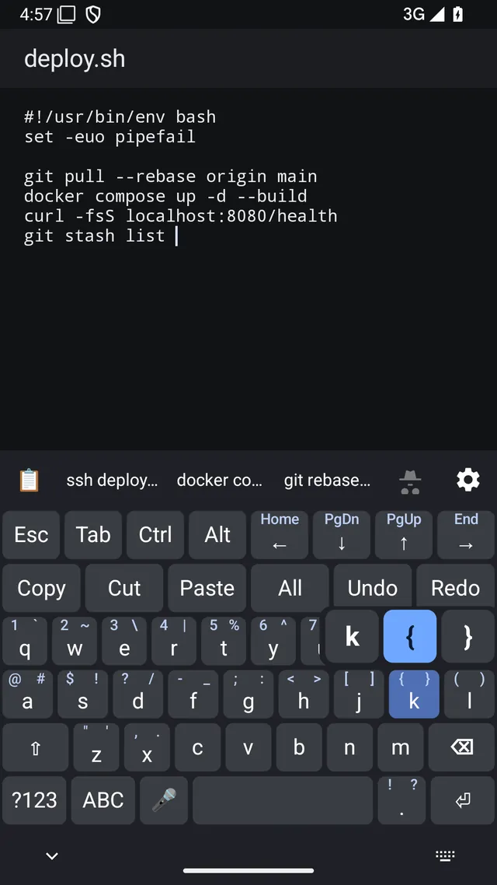
A full everyday keyboard when you're not coding.
Switch back to everyday mode for messages, email, search, notes and everything else. It is a full keyboard, not a stripped-down mode you tolerate just to get back to coding.
- Word suggestions, autocorrect and next-word prediction can learn from what you type. Learning automatically stops in Incognito mode and in password fields.
- Glide typing, automatic capitalization and double-space for a period.
- Switch between English, Spanish and German from the language key. German uses a QWERTZ layout with dedicated ä, ö and ü keys.
- Tap the microphone key for voice input. Dictation is handled by Google voice typing or the speech service on your device.
- On Android 11 and newer, the suggestion bar can show items from your autofill service, including saved logins and one-time codes.
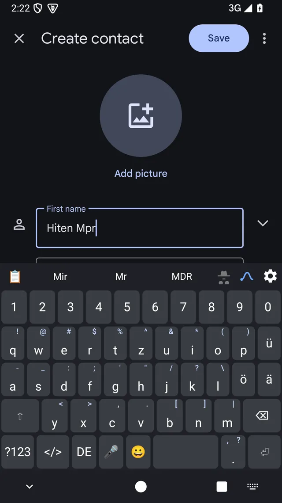
Clipboard, themes and one-handed use
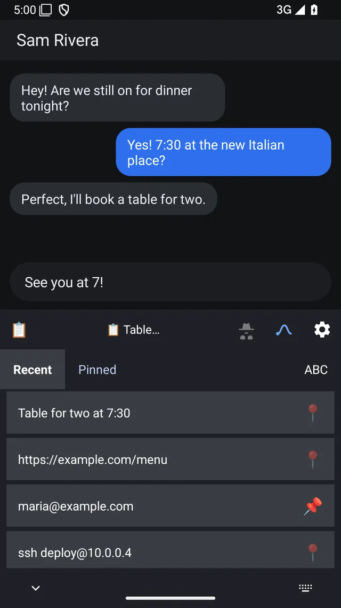
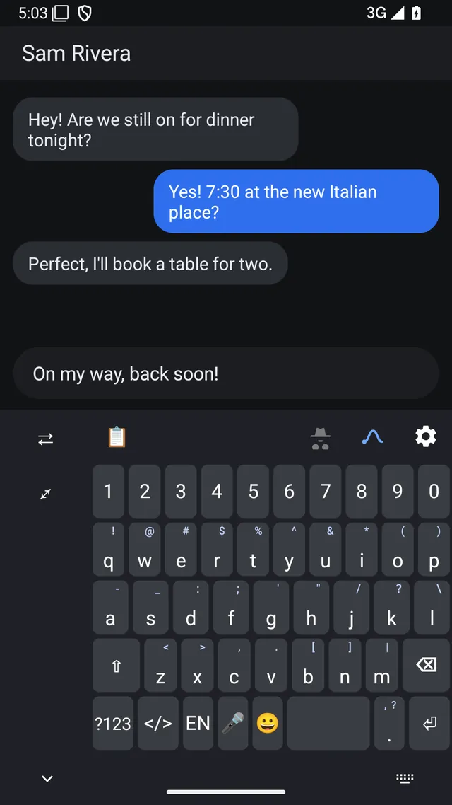
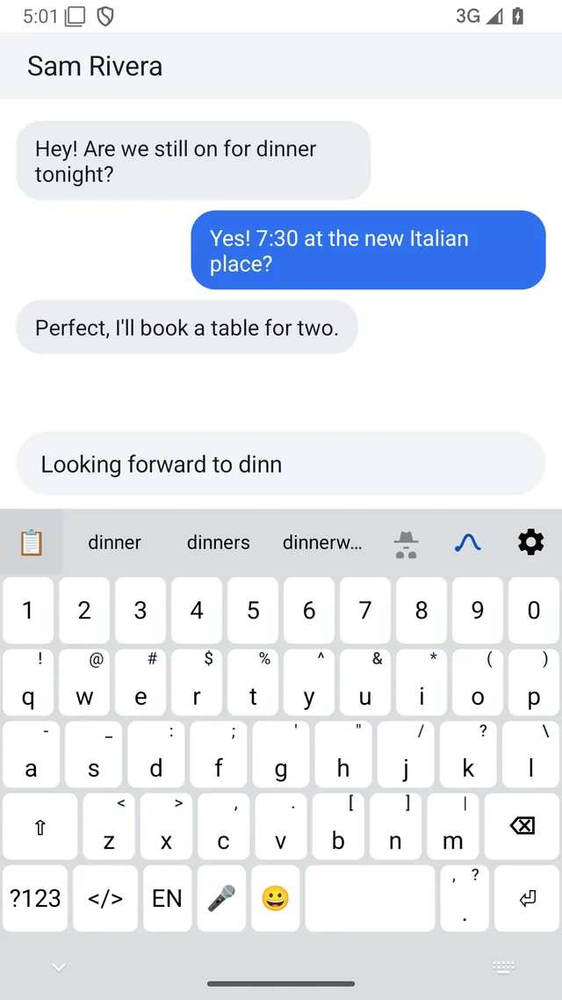
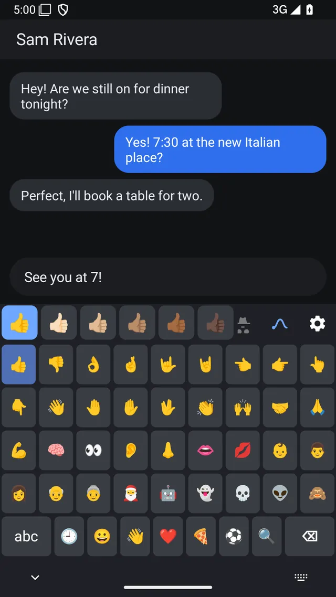
CodeShift Keyboard supports TalkBack. You can also back up and restore your settings, saved words and pinned clipboard items using a file you choose.
An SSH terminal, file manager and editor for the servers you manage.
CodeShift Terminal is built for the times when you need to manage a server from your phone or tablet. Connect over SSH, run commands, edit a config file, move files over SFTP and get back out. The terminal, file browser and editor are all in the same app, so you do not have to jump between three different tools.
Connect
- Save as many hosts as you need, then search or sort the list when you have more than a few.
- Sign in with a password or SSH key. Generate an Ed25519 or RSA key on the device, or import existing Ed25519, RSA and ECDSA keys. Keys are assigned per host.
- Use jump hosts, local or remote port forwarding, and optional SSH agent forwarding.
- Import hosts from your
~/.ssh/config. - Confirm a server's host key the first time you connect. CodeShift warns you if that key changes later.
Run commands
- Keep several SSH sessions open at once, including multiple shells on the same server. Minimize them to the session dock and bring them back when you need them.
- An extra key row keeps Esc, Tab, Ctrl, Alt, arrow keys and common symbols above the terminal.
- Previous commands appear as suggestions while you type. Command history is encrypted on the device, and you can switch it off.
- Save commands as snippets and send them to any open session with one tap.
- Choose from six color themes. Open sessions can keep running in the background, with an ongoing notification while they are active.
Edit
- Open files from the server or your phone and edit them with syntax highlighting, search, undo and local drafts.
- Choose the editor or your last file as the start screen, or use an app shortcut.
- Quickly reopen files from the recent-files list.
Transfer
- Browse remote folders over SFTP, upload or download files, and cancel transfers in progress.
- Choose what CodeShift should do when a file with the same name already exists.
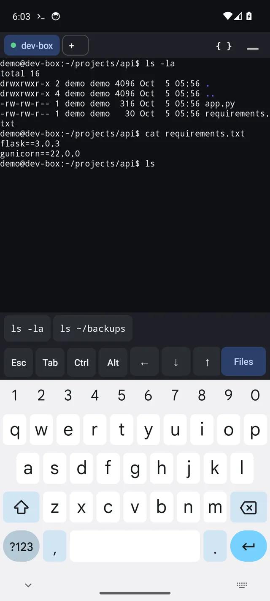
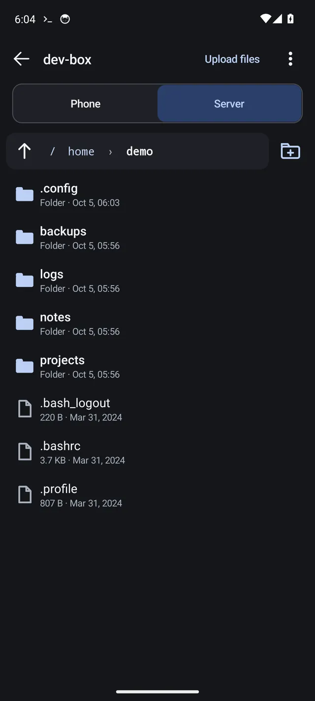
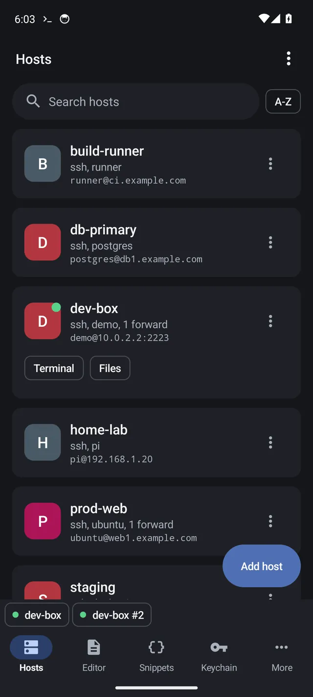
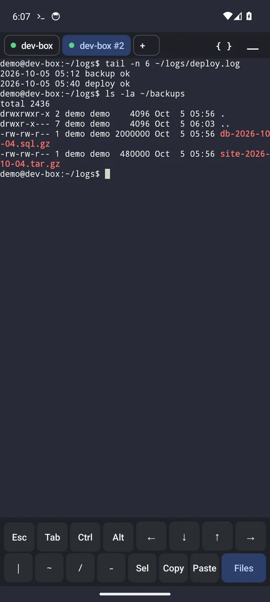
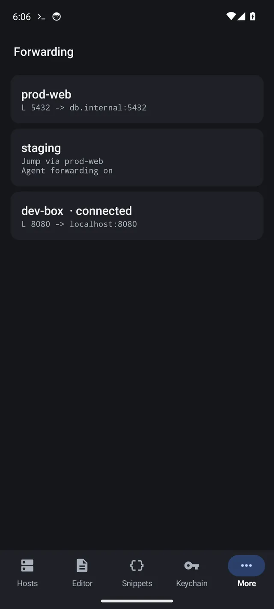
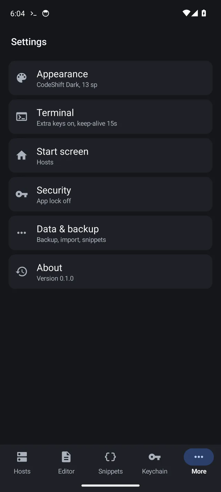
What CodeShift Terminal does not provide. CodeShift Terminal connects to SSH servers you already have access to; it does not provide or host a server for you. It does not support Mosh, and it does not use cloud sync. On some Android devices, background restrictions can interrupt a session, so keep the ongoing notification enabled while you are connected.
Use either app on its own. Use both if they fit your setup.
CodeShift Keyboard and CodeShift Terminal are separate apps. You do not need one to use the other.
The keyboard makes coding on a touchscreen less painful.
Coding on a touchscreen gets frustrating when brackets, pipes, Ctrl and arrow keys are buried behind extra taps. Code mode keeps those keys close, and everyday mode gives you a normal phone keyboard when you're done.
The terminal keeps the tools for a quick server fix in one place.
Fixing something on a server from your phone usually means jumping between a shell, a file browser and an editor. CodeShift Terminal keeps all three together, with your hosts, keys and snippets stored on the device.
CodeShift Terminal works with any Android keyboard and includes its own extra key row. If you also use CodeShift Keyboard, code mode gives you the full coding layout inside Terminal. Neither app depends on the other.
Your data is your business. Not ours.
We think software should collect only what it actually needs. Here is what each app can access, what stays on your device and what never reaches us. The full privacy policies are linked below.
CodeShift Keyboard
- CodeShift Keyboard has no internet permission, so the keyboard itself cannot send what you type over the internet.
- The only permission it asks for is microphone access, and only if you use its built-in voice engine.
- No ads. No analytics. No account. No third-party crash-reporting service. Android cloud backup is disabled for the app.
- Learned words and pinned clipboard items stay in the app's private storage on your device. Clipboard history stays on the device until it expires or you clear it. Incognito mode stops the keyboard from learning from what you type.
- Voice typing is handled by Google voice typing or Android's speech service, which may use the internet. The keyboard never receives or stores the audio.
CodeShift Terminal
- CodeShift Terminal has no account, ads, analytics or tracking. It connects only to the servers and network destinations you configure.
- Saved hosts, passwords, SSH keys, command history and snippets are encrypted on the device using the Android Keystore.
- You can protect the app with Android's fingerprint, face or screen-lock prompt.
- Backups are encrypted files that you export and store wherever you choose. CodeShift does not provide cloud sync.
- SSH and SFTP connections go directly from your device to the server you choose, or through a jump host you configure. CodeShift does not proxy that traffic through our servers.
This website sets no cookies, runs no analytics and loads no third-party scripts or fonts. Everything the page needs is served from this site. The site is hosted on GitHub Pages, which keeps its own server logs.
Where things stand.
Neither app is publicly available yet. Both are in closed testing on Google Play.
- CodeShift Keyboard
- Status: closed testing on Google Play.
- Platform: Android 7.0 or newer on phones, foldables and tablets.
- Price: one-time purchase. No subscription or in-app purchases.
- Languages: English, Spanish and German.
- CodeShift Terminal
- Status: closed testing on Google Play.
- Platform: Android 7.0 or newer on phones, foldables and tablets.
- Price: one-time purchase. No subscription or in-app purchases.
- Requires: access to an SSH server.
To ask about closed-test access, email apps@mygig.life. We will post release dates and prices here once they are final.
Questions
What is CodeShift?
CodeShift is a pair of Android apps for coding and server administration from a phone or tablet: CodeShift Keyboard and CodeShift Terminal. They are separate apps from mygig.life and can be used independently.
How does mode switching work on the keyboard?
Tap the </> key to switch to code mode and ABC to switch back. The keyboard remembers the mode for each app, so a terminal app can stay in code mode while a messaging app stays in everyday mode.
Can I use the keyboard for normal typing?
Yes. Everyday mode is a full QWERTY keyboard with suggestions, autocorrect, glide typing, emoji and voice input. It supports English, Spanish and German.
What is CodeShift Terminal?
CodeShift Terminal combines an SSH terminal, SFTP file manager and code editor in one Android app. Connect to a server you already manage, run commands, edit local or remote files and move files between your phone and the server.
Which platforms are supported?
Android 7.0 and newer on phones, foldables and tablets. There is currently no iPhone, desktop or web version.
Are the apps free?
No. Each app will be sold as a one-time purchase with no subscription, in-app purchases or ads. Pricing will be posted here once it is final.
Does the Terminal support Mosh or cloud sync?
No. CodeShift Terminal does not support Mosh or cloud sync. Your hosts, keys and snippets stay on your device. You can move them to another device with an encrypted backup file.
How does CodeShift handle personal information?
Neither app has ads, analytics, tracking or a user account. CodeShift Keyboard has no internet permission. CodeShift Terminal connects only to the servers and network destinations you configure. See the privacy section above for details.
Where are the privacy policies?
The keyboard policy is at codeshift.mygig.life/privacy, and the terminal policy is at codeshift.mygig.life/terminal/privacy. This guide explains which one covers which app.